Stone Process
The stone system feels more credible when the install logic is visible.
This belongs first on the stone page because it proves the material is real, thin, workable, and more deployable than slab logic suggests.
Nalexible makes stone lighter, thinner, and more expressive, so one surface can change the whole room. This is where real stone becomes the finishing touch: curved forms, illuminated features, and statement moments without slab-level burden.
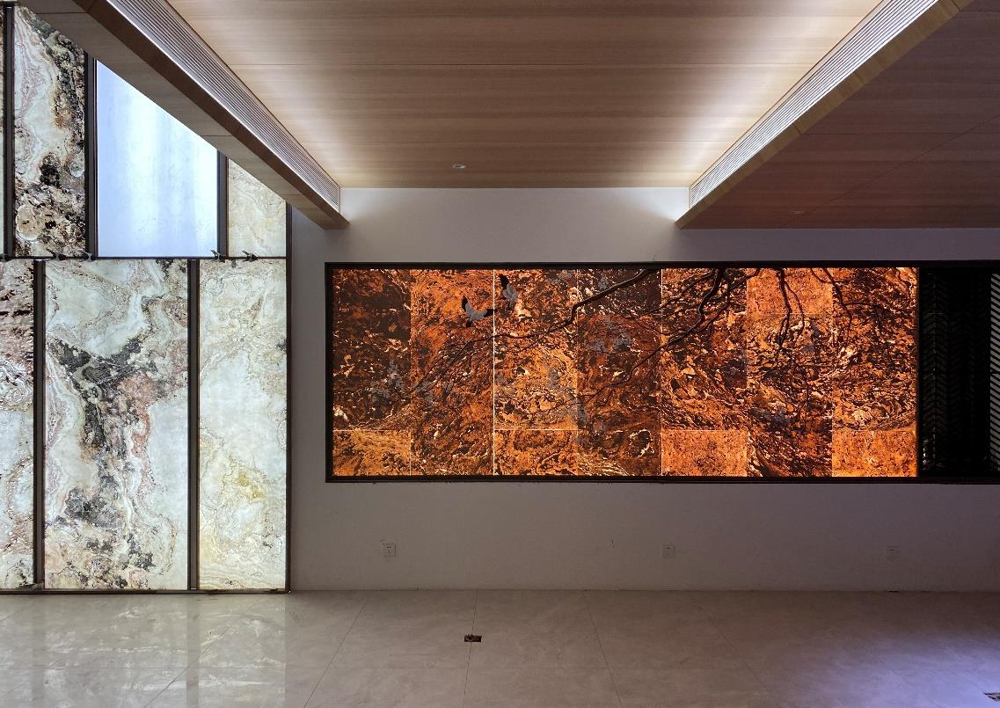

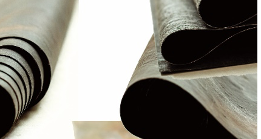
The most important shift is not decorative. It is structural and logistical. Nalexible keeps the presence of natural stone while reducing thickness, lowering transport burden, making curves realistic, and opening up applications that conventional slab logic resists.
This should still read as real stone first. The premium value depends on maintaining tactile variation, depth, and surface irregularity.
The 1 to 3 mm thickness direction changes transport, handling, and installation assumptions, which is why the page should feel lighter, not industrial.
Curved walls, wrapped columns, and shaped surfaces are where Nalexible moves furthest away from conventional stone expectations.
LumiSlate turns natural stone into a light-bearing architectural surface, which gives the whole family a stronger design-system story.
The right trust layer is a compact one. Show the clearest performance arguments, then let the reports live behind them as downloadable support rather than flooding the page with raw PDFs.
This belongs first on the stone page because it proves the material is real, thin, workable, and more deployable than slab logic suggests.
Keep this as secondary context for buyers who want a wider Nalexible overview after the stone page has already established its own case.
Backlit translucent stone is not just a special effect. It reframes Nalexible as an architectural system that can move between feature walls, hospitality counters, illuminated reception zones, and branded spatial moments.
This belongs high on the page because it addresses one of the first practical concerns specifiers will have when moving away from traditional stone systems.
Stone this thin can raise durability questions. Water absorption and moisture-related reporting help convert curiosity into confidence.
These reports matter most when the page moves from decorative interiors toward exterior panels, entry conditions, and landscape-facing walls.
These are the reports that make the page feel ready for real-world specification rather than mood-board-only inspiration.
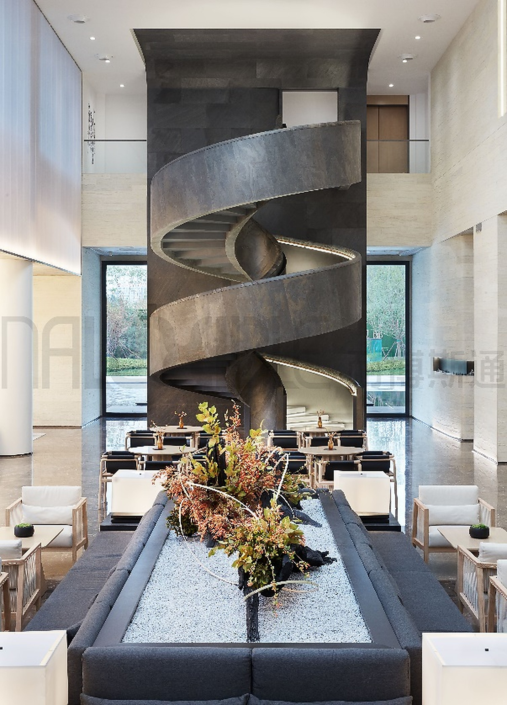
The most direct expression of the Nalexible idea: ultra-thin real stone for curved walls, lighter cladding, ceilings, wrapped columns, and high-impact interior surfaces.

A more controlled finish path for projects that care about surface stability, maintenance, and a cleaner protected expression while keeping the thin-stone identity.
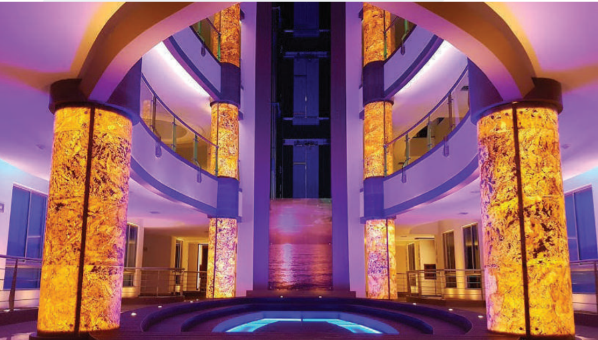
Translucent natural stone panel systems for backlit feature walls, hospitality bars, counters, lobbies, and statement architectural moments.
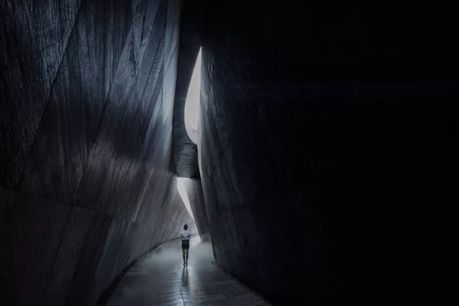
A faster-install stone panel direction for projects that still want real stone presence but need a simpler path from sample approval to site deployment.
The strongest first impression comes from a few finish directions that explain mood, texture, and specification intent immediately.
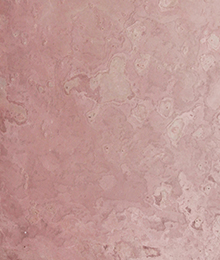
A warm, soft-toned cement stone that works well in residential feature walls, boutique hospitality interiors, and spaces where natural warmth is the design intent.
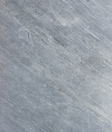
A cool-toned slate with a clean diagonal grain — reads as precise and architectural in controlled commercial interiors, feature walls, and modern specification palettes.
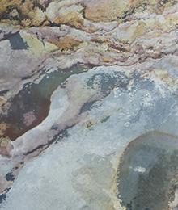
A warmer hospitality-facing finish direction that works well on bars, reception walls, and branded residential features.

A darker protected finish path that can feel more precise and better controlled in premium commercial environments.
Rather than treating translucency as a technical feature alone, this comparison shows how one stone surface can shift from warm hospitality to cooler architectural calm through light alone.
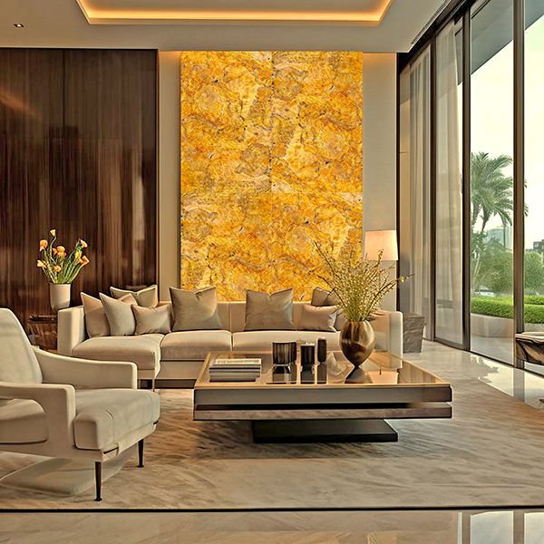
Adhesive-backed 3D wall panels extend Nalexible into a quicker-install stone system for feature walls, retail upgrades, apartment refreshes, and dimensional surfaces that still feel architectural.
Exterior and facade formats open the platform to entry walls, outdoor envelopes, and weather-exposed surfaces where lighter stone construction matters.
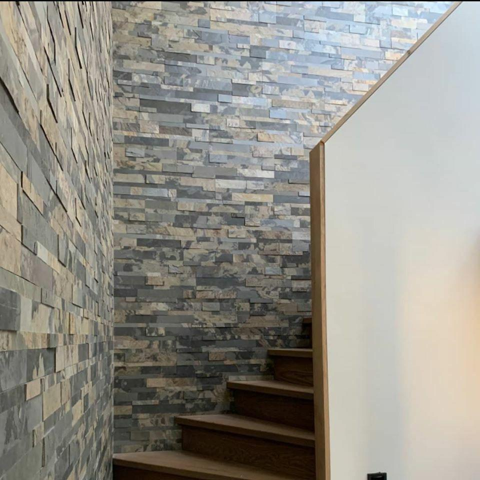
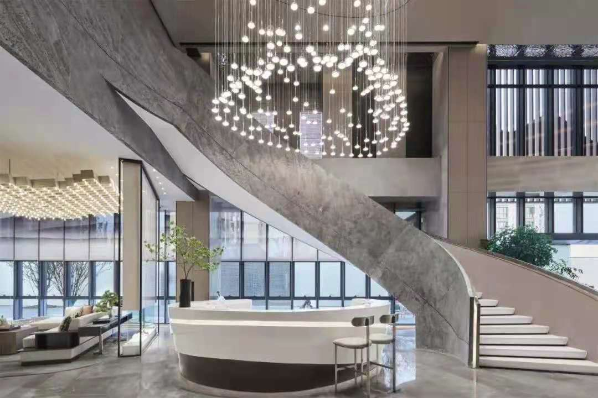
This is where DIY-ready and faster-deployment logic should become visible. It supports EasyStone, adhesive-backed wall products, and lighter retail-facing upgrade conversations without competing with the earlier LumiSlate and curved-stone hero story.
Use this to show that some stone directions can move into apartment refreshes, retail wall upgrades, and lower-disruption decorative work more easily than slab logic suggests.
The value is not only visual. It is also logistical: easier handling, faster wall coverage, and a simpler path from sample approval to install confidence.
Nalexible reads best when it is shown in its clearest roles: luminous arrival moments, sculpted residential surfaces, stronger commercial interiors, and selective exterior statements.

Marble stone walls paired with gold fittings create bathrooms that define the quality of a stay — refined, tactile, and impossible to overlook.

Wrapped stone volumes, islands, and feature walls bring texture, depth, and a more considered sense of living.
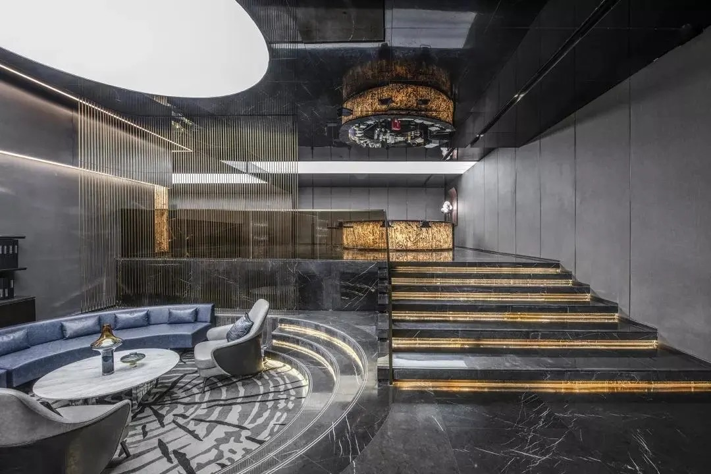
Curated stone textures sharpen bars, counters, and statement walls so branded spaces feel more distinctive on first view.
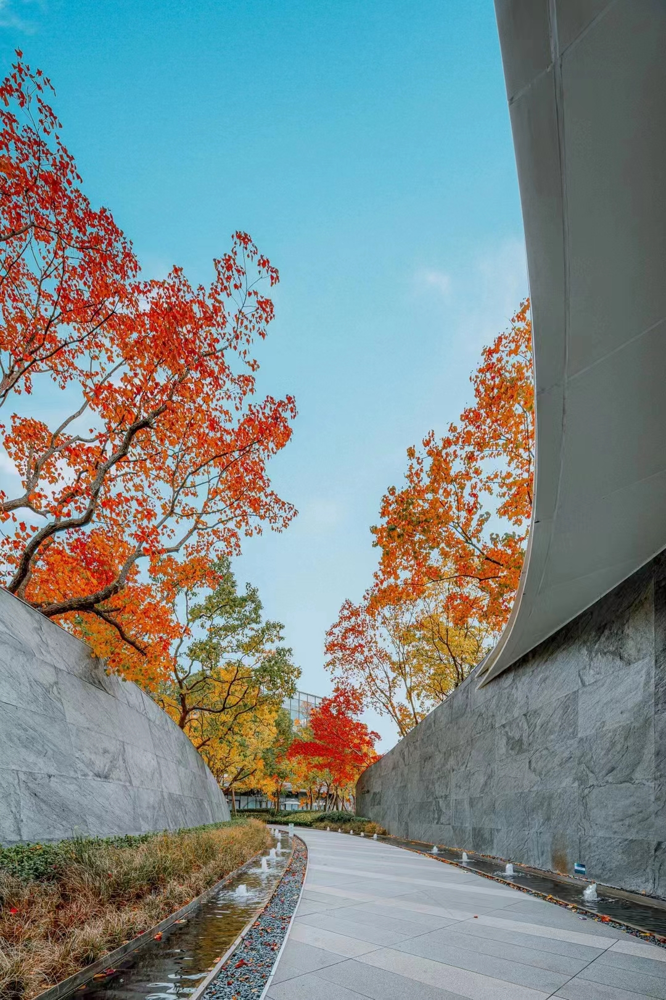
Used selectively, sandstone and exterior stone systems give facades and entry walls the presence of stone without the heaviness of slab logic.
The reports should support the page, not replace it. A compact technical layer is enough for the first launch version.
Fire, moisture, weathering, thermal, and chemical reports support the technical layer. Use project conditions before final specification.
Patent and certificate documents support technology identity. Performance claims should still rely on test reports.
Report applicability depends on test method, substrate, build-up, and market scope. Confirm these before final claim wording.
Use report-backed guidance first. Numeric values and grade-level statements should be published only after page-level citation and condition review.
Ashley Kitchen can help shortlist the right stone family, review suitable applications, and prepare the right technical documents before a sample or project conversation starts.